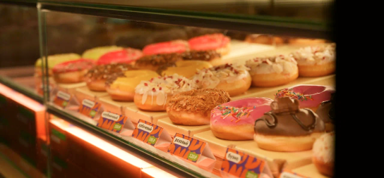
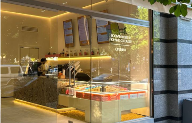
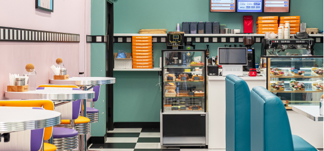
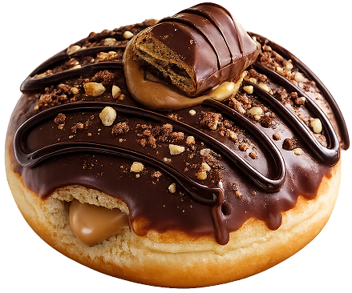
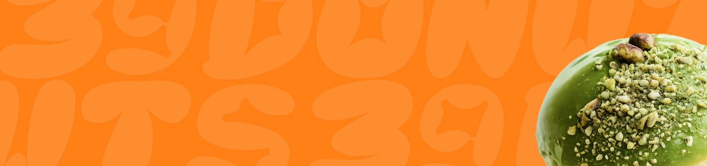

Россия
Предпросмотр · эффекты 02–06
Пять анимаций сайта
Выберите эффект ниже. Для повторного просмотра нажмите «Повторить»; в блоке форматов переключайте вкладки. В двух последних блоках можно также сравнить поведение «До» и «После».
02 · Путь к открытию
Линия шагов
- 01
Оставьте заявку на сайте
- 02
Познакомьтесь с командой
- 03
Подпишите договор
- 04
Оплатите паушальный взнос
- 05
Откройте кофейню
Соединительная линия проходит через пять шагов; каждый номер мягко подсвечивается по очереди.
03 · География роста
Сколько нас
Казахстан



Карточки и фотографии расположены как на основном сайте; анимируются только числа и снимки. Открыть блок на сайте
04 · Продукт как бизнес
Большой пончик
Продукт как бизнес
Почему пончики?
Знакомый эмоциональный продукт превращается в компактную и масштабируемую бизнес-модель.

Вкус, который легко узнатьПончик чуть поднимается и проявляется. Текст и карточка остаются на месте.
05 · История бренда
940 597 пончиков

940 597
пончиков продано в 2025 году
Фирменная композиция мягко появляется справа; затем целиком проявляется число, без искусственного отсчёта.
06 · Переключение форматов
Три формата кофейни
Выбранный формат
Кофейня + цех
- Минимальная площадь
- 80 м²
- Инвестиции
- от 7 000 000 ₽
- Рентабельность
- 25–30%
- Средняя выручка
- ≈ 2 400 000 ₽
- Средняя чистая прибыль
- 600 000 ₽
- Средняя окупаемость
- 12–16 месяцев
01
02
03
04
05
06
Нажмите на другой формат. Фиолетовая плашка перемещается между вкладками, а фотографии плавно сменяют друг друга. Сетка показателей остаётся на месте.